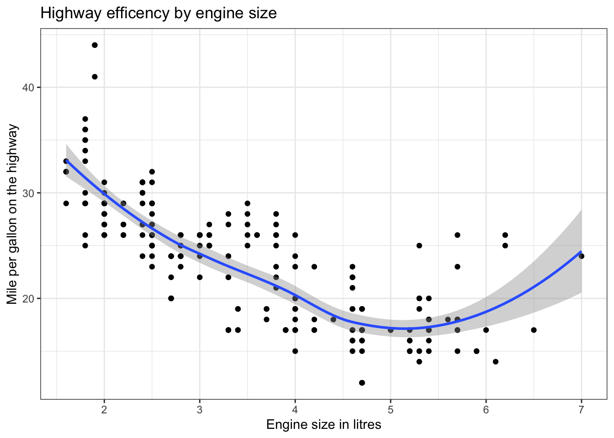

2I have resaved this chapater as exploring data visually 2
There is no better way of letting your data tell its story than through data visualization. This is also an important step in understanding the relationships between variables and developing research questions. We’d put this introduction to data visualization early on in the book because we believe that you’ll find being able to “see” what you are able to do with just a few lines of code, you’ll be motivated to continue with your journey to learn R. The point of this chapter is to get you excited about R. We’ll do some more advanced data visualization later on in the book once you’ve developed some data wrangling skills.
2.1 The grammar of graphics
The world of data visualization has been revolutionized with the introduction of ggplot2 - an R package that leans on a new of thinking about graphics. The starting point is to understand the “grammar of graphics” - these are the various parameters that need to be included in your code that will translate into meaningful visual characteristics in your plot. The power of this new way of thinking is that it allows you to build a plot, layer upon layer, combining geometry and aesthetics like an artist working on a canvas.
The best way to learn and understand the grammar of graphics is to look at an example. We’re going to take a look at the “mpg” dataset that contains information about fuel efficiency for a number cars. We’ll start by visualizing the relationship between two variables, namely “hwy” (highway miles per gallon) and “displ” (engine displacement - or size of the engine). To plot this relationship we need to define a few things:
what data is being used,
how the two variables are mapped against the x and y axis’ of our plot and
what kind of geometry should ggplot use to represent the data (a bar chart, scatter plot, line graph etc.).
Let’s create the plot and then take a closer look at the code:
ggplot(data = mpg,mapping =aes(x = displ, y = hwy))+geom_point()
Let’s take a closer look at the three principle components of grammar of graphics.
2.1.1Data:
While ggplot has a “data” argument that allows you to define what data will be used to generate your plot, you can also feed the data directly into ggplot using pipe operators (but more about that later).
2.1.2 Mapping aesthetics:
To tell your data story, you need to specify how variables within the data are mapped to aesthetic features of your plot. The most obvious examples are the x and y axis. You can also map variables to colors, shapes and sizes and other aesthetic qualities as we’ll demonstrate in examples below.
2.1.3 Geometry
By defining the geometry you tell R what kind of plot to create (a boxplot, a histogram, a line graph etc.). The beauty of ggplot is that you can create layers of geometry, each with its own aesthetic mapping. Its this feature that sets ggplot apart.
Its this feature of laying one geometry over another that we want to demonstrate early on in your journey. By adding one simple line of code we can superimpose a smoothed linear model with standard errors to demonstrate the relationship between these two variables.
ggplot(data = mpg,mapping =aes(x = displ, y = hwy))+geom_point()+geom_smooth()+labs(title ="Highway efficency by engine size",x ="Engine size in litres", y ="Mile per gallon on the highway")+theme_bw()
`geom_smooth()` using method = 'loess' and formula = 'y ~ x'

Each time we add a ‘+’ at the end of a line, we’re telling ggplot that we’re going to add another layer or add information about how the plot should look. The ‘labs’ function above is for labels and the theme_bw is one of the many built in themes that you can easily add to a plot to clean it up.
Now let’s add a little color to the plot and look at the same data but distinguish between cars of different “drives” (four wheel drive, front wheel drive, rear wheel drive etc.). To ensure that the plot doesn’t get too messy, we’re going to remove the standard error shading from the smoothed linear models.
mpg %>%ggplot(mapping =aes(x = displ, y = hwy,colour = drv))+geom_point()+geom_smooth(se =FALSE)+labs(title ="Highway efficency by engine size",x ="Engine size in litres", y ="Mile per gallon on the highway",color ="Drive")+theme_bw()
`geom_smooth()` using method = 'loess' and formula = 'y ~ x'